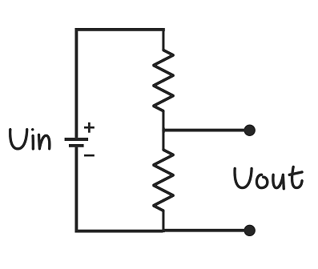

Introduction to electronics
Electronics deals with the use of circuits that involve various electrical components. The fridge you use to get delicious ice-creams frozen cold to the smartphone in your hand globalizing you every second crazily adds to the amazing application of it. In this section, we will give a brief overview of the electronics that we need to get started with working on the book.
Carrying forward the zeal in you to explore the world of simplification. Aaah! Not at all a big deal now! Your are just a few steps behind to build awesome circuits which will automate your beloved games.
If you are a beginner, this video series on YouTube is a great way to start- “Building Electronic Circuits” by The Motivated Engineer. It starts off by giving you an overview of the basics of the electronic components generally used and teaches you how to work on some cool projects such as infra red sensors and wearable circuits.
Voltage Divider Circuit

A voltage divider circuit is commonly used in many electronic circuits for a wide range of applications including adjusting level of signal, measurement of voltages, etc. It is used in multimeter and wheatstone bridge. It produces an output voltage which is a fraction of the input voltage. The value of the output voltage depends on the values of the resistors used.
LDR can be used in place of one of the resistors. The resistance of the LDR decreases if the incident light increases, and vice-versa. This change in resistance can be used to produce a change in voltage at the output which is important in many applications. For example, when we use a microcontroller, we can detect the lighting in a room by just measuring the voltage at the output of a voltage divider circuit in which an LDR is used in place of one of the resistors.